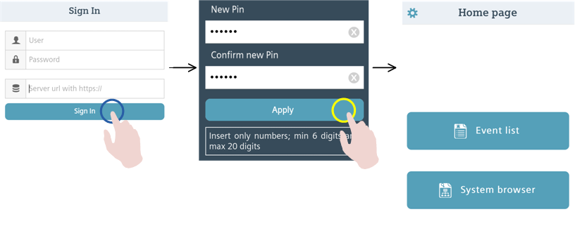
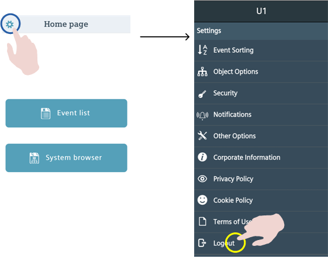

Starting or Exiting the Mobile App
Start the Mobile App and Log In
- The mobile app is installed on the mobile device, and the device has the required network connection (internet or intranet).
- On the mobile device, tap the Desigo CC icon to start the app.
- If the Terms of Use and Privacy page displays, tap Accept.
- If a Pin entry screen displays:
- Enter your PIN code and tap Ok to resume working with the app.
If you do not remember your PIN code, you can tap Logout to return to the Sign-In screen. From there, you can sign in again with your full site credentials. - If a Sign In screen displays:
a. Complete the Server URL, User, and Password fields, then tap Sign In.
b. Enter the PIN you want to set into the New Pin and Confirm new Pin fields, then tap Apply.
c. Tap anywhere on the screen outside the PIN panel to close it and proceed to the app home page.
- The mobile app resumes where you left off (in case of PIN), or displays the home page (in case of full sign in).

Close the Mobile App
When you are not using the mobile app, you can typically just put it in the background, by switching to a different app, or returning to the device home screen. However, if you want to quit the app altogether (for example, because it has become unresponsive), then you can close it as instructed here.
To close the app on iOS:
- Double-click the Home button on the device to view the app switcher tray (the recent apps list).
- Swipe left and right to find the Desigo CC app.
- Swipe the Desigo CC app upward off the screen.
To close the app on Android, do one of the following:
- Press and hold the Home button on the device to open the recent apps list. Swipe the Desigo CC app sideways off the screen.
- From the app home page, press the Back button on your device.
NOTE: Depending on configuration, explicitly closing the mobile app may cause you to be logged out in some circumstances.
Log Out of the Mobile App
You can manually log out of the mobile app to disconnect it from the Desigo CC management platform.
- Tap Settings in the action bar of the app.
- Tap Logout.
- You are logged out, and the sign-in screen displays. You will no longer receive any notifications.

NOTE: To reconnect to the Desigo CC management platform you must sign in again with your full credentials.